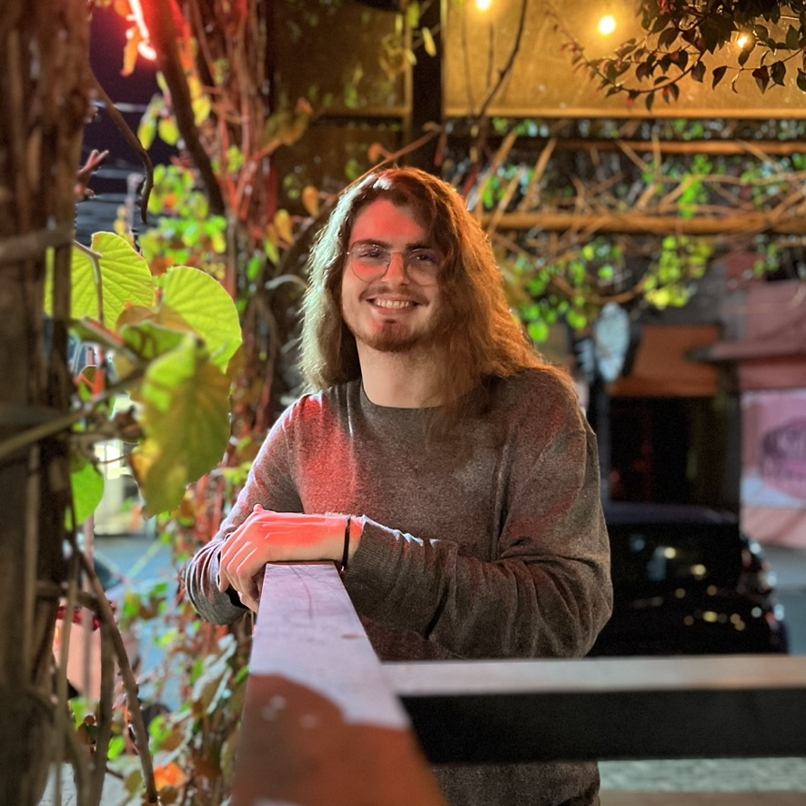

Oi, meu nome é Lucas Piovani, eu tenho 19 anos e venho da cidade de Limeira, interior de São Paulo. Falando um pouquinho do meu trajeto acadêmico, estudei em escola particular até o nono ano, quando prestei o vestibulinho do Cotil, Colégio Técnico da Unicamp aqui na minha cidade e acabei conseguindo ingressar no ensino médio integrado ao técnico em geodésia e cartografia. A minha participação nesse colégio me desenvolveu muito como pessoa e me colocou em contato com a programação de computadores, algo que acabei me apaixonando desde a primeira interação. Como sempre quis estudar fora do país, busquei muito sobre oportunidades de graduação em computação em universidades estrangeiras, mas, mesmo tendo excelentes notas e boas atividades extracurriculares como o domínio do piano, acabei descobrindo que estudar fora era algo completamente fora da realidade financeira da minha família.
Assim, em 2021 eu prestei o vestibular da Fuvest e consegui ingressar na USP de São Carlos, no curso de Ciências de Computação. Meu primeiro semestre foi um grande choque de realidade, a universidade era muito mais do que eu imaginava. Bom, como sempre busquei por novas experiências, acabei entrando em grupos de extensão como o PET Computação, em que hoje atuo como coordenador de duas frentes sobre ensino de programação para a comunidade do ICMC, o meu instituto, e sou membro de uma frente em que ensina lógica de programação pra crianças de escola pública de São Carlos. Participei também como monitor de um projeto da USP pra terceira idade, em que ensinamos o uso de smartphones e aplicativos populares para idosos. Atualmente eu to cursando o meu quinto semestre e to em busca de realizar meu sonho de cursar um semestre numa universidade estrangeira ou até mesmo realizar uma iniciação científica no exterior. Muito obrigado pela atenção!
